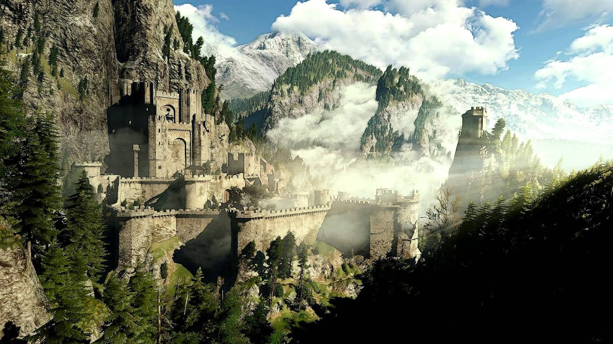

Zaklínač se odehrává ve fantasy světě, který stvořil polský spisovatel Andrzej Sapkowski. Děj se odehrává ve cca. 13. století ve fiktivním Polsku. Knih bylo vytvořeno na motiv zaklínače 8, hry byly vytvořeny 3 (nepočítaje Gwent a Thronebreaker).
Zaklínači jsou mutanté, kteří byli vytvořeni společnými silami druidů a mágů, aby za pomocí mutagenů, jedů a magických přípravků, jejich tělo pracovalo rychleji, efektivněji, měli zlepšené smysly a mohli používat jednoduchou magii.
Přeměnu na zaklínače, ale neobsahovala jenom tzv. Zkouška trav, kde se malí chlapci podrobovali mutacím, které byly mimochodem velmi nebezpečné a jen hrstka z podrobených přežila (asi 3 z 10), ale také obsahovala Cestu meče, kde se vyučoval tvrdý bojový výcvik, kde se kladl důraz na boj s mečem a fyzickou připravenost na boj s monstry.
Monstra se do světa Zaklínače dostala při tzv. Konjunkci sfér, kdy se otevřou brány mezi paralerními světy. Na tento svět ale nepřišla jenom monstra, ale třeba i lidé, elfové a upíři. Některá stvoření jako např. jednorožci nebo zřídla se umí přemisťovat mezi světy libovolně bez omezení.
Ve světě Zaklínače existuje 5 různých škol. Každá škola vyučovala jinak a cvičila na jiný styl boje. Všechny měli ale jedno společné - vychovat dokonalé zabijáky na monstra.
Škola Vlka je nejznámější školou v celém světě Zaklínače. Jedná se o pravděpodobněji nejstarší školu, která vznikla v severních horách země Keadwen, kde se zaklínači usídlili na staré pevnosti Kaer Morhen (Stará mořská pevnost). Ve škole Vlka se převážně vyučuje souboj se středně těžkou zbrojí.
Škola Kočky se pravděpodobně nacházela nejseverněji ze všech škol, nejpravděpodobněji někde v Koviru nebo Povissu. Jejich členové byli cvičení na rychlost, hbitost a znalost jedů. Tutíž většina zaklínačů školy Kočky využívala lehkou zbroj. Mezi lidmi i zaklínači je známo, že členové této školy jsou agresivní, horkokrevní a často projevují psychopatické chování.
O škole Gryfa toho není moc známo. Jediné co je obecně známo, je že vyučovali v podobném stylu boje jako škola Vlka, s tím rozdílem, že bojovali lehce agresivněji.
Škola Medvěda je podobný případ, jako škola Gryfa, protože její lokace a styl vyučování zůstává záhadou. Přesto se ví, že základní výhodou školy Mědvěda byla nadpřirozená síla. Jejich způsob boje byl (na zaklínače) pomalý. Nosily těžké zbroje, tudíž vydrželi více zásahů.
Škola Zmije byla skoro zapomenuta, dokud se nezačali objevovat zaklínači této školy a začali zabíjet vládce Severních království. Zaklínači školy Zmije často pověsili své řemeslo a využili své schopnosti na méně nebezpečné a více výnosné řemeslo. - nájemný vrah.